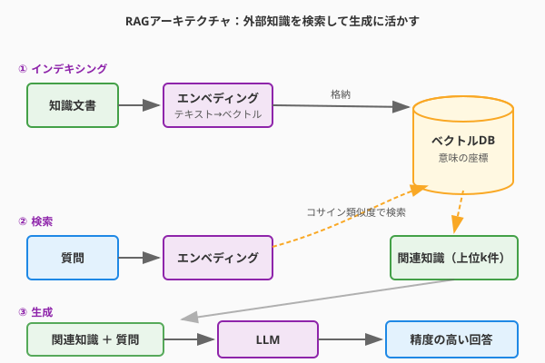

2.8節で設計したリレーショナルDBは、勇者のレベルやクエストの達成記録といった構造化データを完璧に管理します。しかし「この冒険者の過去の行動パターンからどんな冒険が合うか」「攻略日誌に書かれた数百の記録から今の状況に最も役立つ一節はどれか」——こうした意味のある非構造化知識を活かすには、別の魔法が必要です。
それがRAG（Retrieval-Augmented Generation：検索拡張生成）です。LLMは訓練時点までの知識しか持ちませんが、RAGはその外部に「賢者の書庫」を設けて、質問に応じて最も関連性の高い知識を瞬時に召喚します。固定された記憶を超える外部記憶魔法——これがRAGの本質です。
RAGは「インデキシング」「検索」「生成」の三段階で動作します。
次の図は、RAGシステムの全体像——知識文書がベクトルとして格納され、ユーザーの質問から類似ベクトルが検索されてLLMの生成に組み合わされる——流れを示しています。

テキストをそのままDBに入れても、意味による検索はできません。まずエンベディング（Embedding）と呼ばれる変換で、テキストを高次元の数値ベクトルに変換します。
import anthropic
client = anthropic.Anthropic()
def embed_text(text: str) -> list[float]:
"""テキストをエンベディングベクトルに変換する"""
response = client.embeddings.create(
model="voyage-3",
input=text,
)
return response.embeddings[0]
# QuestForgeの過去クエストをインデキシング
quest_log = "ゴブリンの森での討伐クエスト。罠を解除し、リーダーを捕縛した。難易度★★★。"
vector = embed_text(quest_log)
# → [0.023, -0.156, 0.891, ...] のような1024次元のベクトルが生成される意味が似ているテキストは、この座標空間で近い場所に配置されます。「ゴブリン討伐」と「モンスター退治」は、表現が違っても座標が近い——これがベクトル検索の力です。
質問をベクトル化し、格納済みベクトルとのコサイン類似度（方向の近さ）やユークリッド距離（空間的な近さ）を計算して、最も関連性の高い知識を取り出します。
import numpy as np
def cosine_similarity(vec_a: list[float], vec_b: list[float]) -> float:
"""二つのベクトルのコサイン類似度（-1〜1）を計算する"""
a = np.array(vec_a)
b = np.array(vec_b)
return float(np.dot(a, b) / (np.linalg.norm(a) * np.linalg.norm(b)))検索で取り出した「関連知識（コンテキスト）」を質問に添えてLLMに渡します。LLMは自身の推論能力と外部知識を組み合わせて、精度の高い回答を生成します。
大規模なベクトル検索を高速に行うための専用DBがベクトルデータベースです。
| DB | 特徴 | 向いている用途 |
|---|---|---|
| pgvector | PostgreSQLの拡張機能。既存のSQLと共存できる | 既存のRDBを活かしたい場合 |
| Chroma | Pythonネイティブで使いやすい | プロトタイプ・小〜中規模 |
| Pinecone | マネージドサービス。スケールが容易 | 本番・大規模システム |
| Weaviate | ハイブリッド検索（ベクトル＋全文）対応 | 多様な検索要件がある場合 |
QuestForgeのような中規模アプリでは、pgvectorを使うと既存のPostgreSQLスキーマ（2.8節で設計したHero・Quest・Guildテーブル）と同じDBで管理でき、インフラの複雑さを最小化できます。
-- pgvectorの有効化とテーブル定義
CREATE EXTENSION IF NOT EXISTS vector;
-- クエスト攻略日誌をベクトルとして格納するテーブル
CREATE TABLE quest_memories (
id SERIAL PRIMARY KEY,
quest_id INTEGER REFERENCES quests(id),
content TEXT NOT NULL, -- 元のテキスト
embedding vector(1024), -- エンベディングベクトル
created_at TIMESTAMP DEFAULT NOW()
);
-- コサイン類似度によるインデックス（高速検索用）
CREATE INDEX ON quest_memories USING ivfflat (embedding vector_cosine_ops);RAGを使うと、QuestForgeに過去の冒険記録から最適な次のクエストを提案する機能を実装できます。
import anthropic
import psycopg2
client = anthropic.Anthropic()
def find_similar_quests(hero_query: str, top_k: int = 3) -> list[dict]:
"""勇者の問いかけから意味的に近いクエスト記録を取得する"""
query_vector = embed_text(hero_query)
# pgvectorでコサイン類似度上位k件を取得
conn = psycopg2.connect("postgresql://questforge/main")
cur = conn.cursor()
cur.execute("""
SELECT q.title, qm.content,
1 - (qm.embedding <=> %s::vector) AS similarity
FROM quest_memories qm
JOIN quests q ON q.id = qm.quest_id
ORDER BY qm.embedding <=> %s::vector
LIMIT %s
""", (query_vector, query_vector, top_k))
return [
{"title": row[0], "memory": row[1], "similarity": row[2]}
for row in cur.fetchall()
]
def suggest_quest_with_rag(hero_situation: str) -> str:
"""勇者の状況に応じた次のクエストをRAGで提案する"""
# 類似する過去の冒険記録を召喚
memories = find_similar_quests(hero_situation)
# 記憶をコンテキストとしてLLMに渡す
context = "\n".join(
f"- [{m['title']}] {m['memory']}" for m in memories
)
response = client.messages.create(
model="claude-opus-4-6",
max_tokens=512,
system="あなたはQuestForgeの賢明な冒険ガイドです。過去の冒険記録を参考に、勇者に最適な次の一手を提案してください。",
messages=[{
"role": "user",
"content": f"""勇者の現在の状況：
{hero_situation}
過去の類似した冒険記録：
{context}
この記録を踏まえて、次に挑戦すべきクエストと心構えを提案してください。"""
}]
)
return response.content[0].text
# 使用例
suggestion = suggest_quest_with_rag(
"レベル15の戦士。毒の沼地エリアに初めて踏み込もうとしている。"
)このコードの核心は、hero_situation と過去の記録との意味的な近さで検索することです。「毒の沼地」と書かれていなくても、「水辺のエリア」「状態異常が多いゾーン」という記録が近いものとして取り出されます。
RAGシステムの品質は、「何をどう格納するか」の設計で決まります。
| 設計ポイント | 選択肢 | QuestForgeでの判断 |
|---|---|---|
| チャンクサイズ | 文単位・段落単位・節単位 | クエスト1回の記録を1チャンクに（文脈が失われない粒度） |
| メタデータ | タイムスタンプ・難易度・カテゴリ | quest_id と hero_id でフィルタリングできるよう付与 |
| 再インデキシング | 全件・差分・オンライン | 新しいクエスト完了時にリアルタイムで追加 |
| ハイブリッド検索 | ベクトルのみ・全文のみ・組み合わせ | ベクトル検索 + クエストカテゴリの完全一致フィルタ |
「チャンクが細かすぎると文脈が失われ、大きすぎると無関係な情報が混入する」——この粒度の調整がRAGチューニングの要です。
AIを使うと、RAGシステム構築の多くのステップを加速できます。
エンベディングの評価: 「この2つのテキストが意図したとおり意味的に近い/遠いか確認するテストケースを生成して」と依頼することで、エンベディングモデルが自分のユースケースに合っているかを体系的に検証できます。
チャンク戦略の相談: 「このドメインの文書はどの粒度でチャンクするのが適切か、利点と欠点を比較して」と問えば、トレードオフを整理する出発点が得られます。
ハルシネーションの検出: 「LLMの回答が提供したコンテキストに含まれる情報だけに基づいているかを確認するプロンプトを設計して」と依頼することで、RAGシステムの品質評価ロジックを構築できます。
RAGは、LLMが持てない「最新の・特定ドメインの・私的な」知識を補う外部記憶魔法です。構造化データはSQLで（2.8節）、意味的な知識はベクトルDBで——二つの「記憶の設計」を組み合わせることで、QuestForgeは過去の無数の冒険記録から学ぶ真の賢者へと進化します。pgvectorのような既存インフラとの統合から始め、スケールに応じてマネージドサービスへと移行するアーキテクチャが、実践的な出発点です。